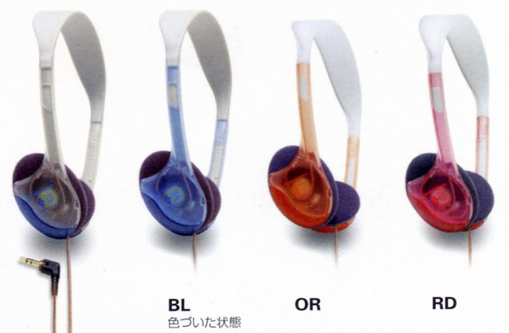

ATH-F1CX

■価格 2,500円■型式 オープンバック・ダイナミック形■振動板 31�o■インピーダンス 35Ω■再生周波数帯域 20-22,000Hz■許容入力 100mW■感度 100ｄB/mW■コード 1.2ｍL型ステレオミニプラグ■重量 48g（コード含まず）■発売 1998年3月1日■販売終了 ■備考 半透明のハウジングが太陽光にあたることにより色づく
テクニカのインデックスへ